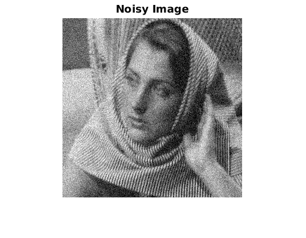
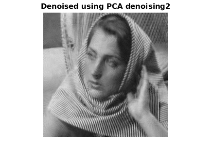
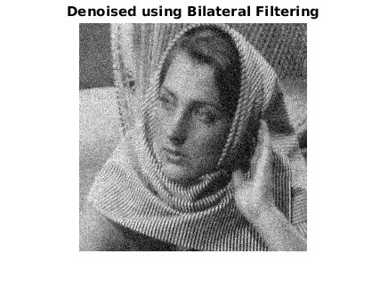

Contents
MyMainScript
tic;
Your code here
sigma = 20;
org = imread('../data/barbara256.png');
org = double(org);
img = org + randn(size(org))*sigma;
result1 = myPCAdenoising1(img, sigma);
result2 = myPCAdenoising2(img, sigma);
result3 = myBilateralFiltering(img, 1.45, 10.0);
sqerror = (result1 - double(org)).^2;
meansqerror = sum(sum(sqerror))/(size(sqerror,1)*size(sqerror,2));
s = sprintf('The mean squared error for PCAD 1 is %f\n', meansqerror);
disp(s);
sqerror = (result2 - double(org)).^2;
meansqerror = sum(sum(sqerror))/(size(sqerror,1)*size(sqerror,2));
s = sprintf('The mean squared error for PCAD 2 is %f\n', meansqerror);
disp(s);
sqerror = (result3 - double(org)).^2;
meansqerror = sum(sum(sqerror))/(size(sqerror,1)*size(sqerror,2));
s = sprintf('The mean squared error for bilateral filtering is %f\n', meansqerror);
disp(s);
figure, imshow(uint8(org)), title('Original Image');
figure, imshow(uint8(img)), title('Noisy Image');
figure, imshow(uint8(result1)), title('Denoised using PCA denoising1');
figure, imshow(uint8(result2)), title('Denoised using PCA denoising2');
figure, imshow(uint8(result3)), title('Denoised using Bilateral Filtering');
The mean squared error for PCAD 1 is 96.834329
The mean squared error for PCAD 2 is 60.198470
The mean squared error for bilateral filtering is 339.443456


 
Difference in PCA denoising and bilateral filtering
toc;
Elapsed time is 601.237131 seconds.